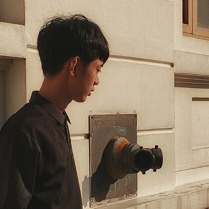

Resume
Jhon Mark L. Lumibao
Information Technology Student
- Phone · 0948 722 5920
- Email · jlumibao.4746@umak.edu.ph
- Address · Makati City, Metro Manila, Philippines

Professional summary
A motivated and detail-oriented Information Technology student with a strong interest in programming, robotics, electronics and web development. Has foundational knowledge of Java programming, microcontrollers and sensor integration, with a commitment to continuous learning and technical development. Demonstrates adaptability, problem-solving ability and a willingness to explore new technological solutions, and is looking for opportunities to apply academic knowledge, gain practical experience and contribute to technology-driven projects.
Education
Bachelor of Science in Information Technology (BSIT)
Senior High School — STEM Strand
Graduated with honors. Research project: AQUALERT — an Arduino-based flood-automated electrical power cut-off alarm system, which received an award for innovation.
Technical skills
- Programming
- Fundamental Java programming and coding concepts
- Robotics
- Basic knowledge of VEX V5 robotics systems and motor control
- Electronics
- Familiarity with ESP32 microcontrollers and electronic components
- Sensors
- Temperature, humidity, light intensity and soil moisture sensors
- Web development
- Foundational knowledge of website structure and interactive web design
- Applications
- Familiarity with digital productivity tools and document preparation
Project experience
- Built an Arduino-based prototype that detects rising floodwater and cuts the electrical supply automatically.
- Integrated water-level sensing with SMS notification and an audible alarm.
- Presented the poster and the working unit at the research defense and exhibit.
- Explored the integration of microcontrollers and sensors for environmental monitoring.
- Studied sensors for measuring temperature, humidity, light intensity and soil moisture.
- Gained experience with basic robotics components, motor control and electronics integration.
- Practised Java programming and fundamental problem-solving techniques.
- Built responsive pages with HTML and CSS, including this site.
- Applied logical thinking and creativity when exploring technology-based solutions.
Core competencies
- Critical thinking and problem-solving
- Analytical and logical reasoning
- Teamwork and collaboration
- Time management and organisation
- Adaptability and continuous learning
- Attention to detail
- Creativity and technical curiosity
Personal attributes
- Willingness to learn new technologies and programming techniques
- Ability to adapt to new tasks and challenges
- Commitment to completing assigned responsibilities
- Openness to constructive feedback
- Interest in technological innovation and professional growth
References available upon request.